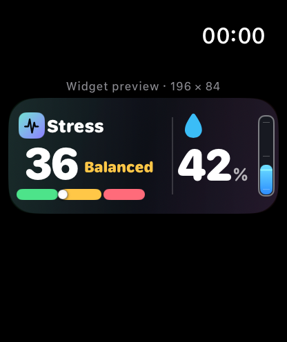
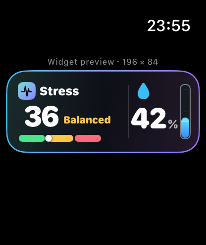

当前产品是纯 watch app：抬腕看压力、点一下喝水、到点吃药。iOS 端不应该复制手表，而应该接管更适合大屏的事情：复盘、配置、编辑、权限、同步和备份。

MyWatch 的核心体验仍然发生在手腕上。iOS 端是 companion，不是替代品：把 watch 端的即时动作沉淀成更完整的设置、解释、回顾和管理。
压力读数、喝水打卡、用药确认、提醒响应都保持在 watch 上，交互目标是 3 秒完成。
目标值、提醒时间、药品剂量、长期趋势、HealthKit 权限说明和数据导出放到 iOS。
手表只给状态，手机解释趋势：今天为什么高压、哪段时间最容易缺水、哪种提醒最有效。
推荐底部 4 Tab。Tab 数量控制在 4 个以内，避免健康类工具变成复杂后台。
P0 做成第一版 iOS companion 足够完整；P1 是体验增强；P2 留给真正有历史数据以后再做。
| 模块 | 优先级 | 功能 | 说明 |
|---|---|---|---|
| Today | P0 | 今日总览 | 压力分、HRV、喝水进度、今日用药、下一条提醒；只展示少量核心数字。 |
| Trends | P0 | 7/30 天趋势 | 压力均值、HRV 中位数、饮水达标率、用药依从率。iPhone 上用 Charts 承担详细趋势。 |
| Routines | P0 | 目标与提醒编辑 | 饮水目标、快捷杯量、提醒次数/时间、提醒 burst；药品增删改、剂量、每日时间。 |
| Watch | P0 | 同步和权限状态 | HealthKit、通知、App Group/WatchConnectivity 状态；显示 Smart Stack/复杂功能预览。 |
| Insights | P1 | 模式识别 | 找出高压时段、低 HRV 连续天、饮水不足触发点，并给短建议。 |
| Export | P1 | CSV/JSON 导出 | 本地优先，不做账号系统也能备份和迁移。 |
| Widgets | P1 | iOS 小组件 | 桌面展示压力 + 喝水进度 + 下一条提醒，视觉沿用 Smart Stack。 |
| Coaching | P2 | 个性化节律建议 | 需要至少 2-4 周历史数据再做，避免早期建议显得空泛。 |
下面是低保真 iPhone 原型。风格沿用当前 watch：深色背景、玻璃卡、模块渐变、圆环/条形进度；但信息密度更高，适合复盘和编辑。

把 StressReading、HydrationState、Medication、MealReminder 抽成 Shared target，watch/iOS/widget 共用。
短期用 App Group + WatchConnectivity；watch 仍可离线独立运行，iPhone 打开后合并日志。
HealthKit 原始数据由系统管理。iOS 端只展示授权状态和解释，不要把健康数据上传到服务器。
深色为主，iOS 页面用轻微蓝紫/青色环境光，避免 watch 端纯黑在手机上显得空。
卡片圆角 8-18，工具型列表更克制；真正的主指标才用大圆环。
压力用绿/黄/红语义色；喝水蓝；用药珊瑚；餐食绿色。模块色只用于强调。
Tab 导航、segmented control 切周期、sheet 做编辑，toolbar 放设置和导出。
参考：Apple Human Interface Guidelines 的 watchOS、Tab bars、Widgets、SF Symbols、Progress indicators 相关原则；结合本项目 PRD.html、ARCHITECTURE.html、Theme.swift 和现有截图/Widget 设计稿整理。